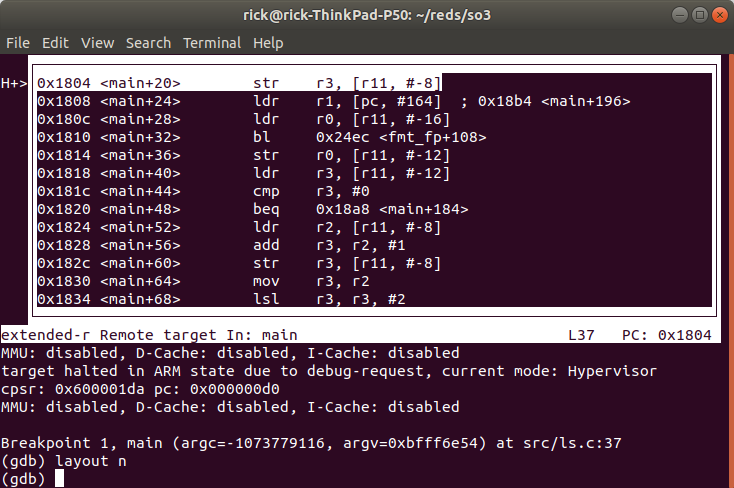
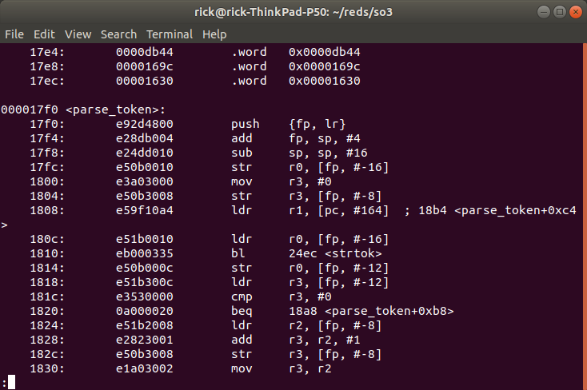
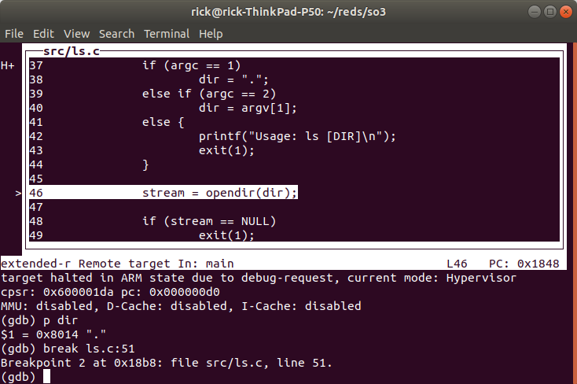
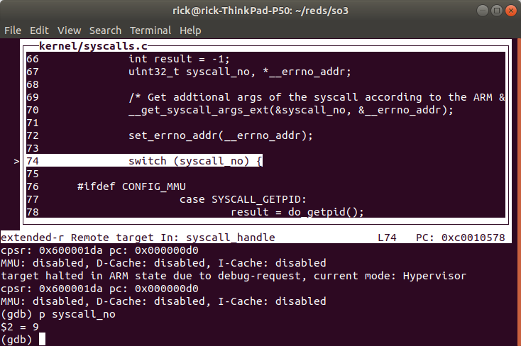

4. Debugging SO3 with JTAG on RPi4¶
This pages gives instructions on how to debug SO3 or SO3 applications on the Raspberry Pi 4 through the JTAG interface.
4.1. Requirements¶
Raspberry Pi 4
SD Card with bootloader and firmware
JTAG Probe and cables
OpenOCD
GDB-multiarch
4.2. JTAG Probe¶
To enable JTAG on the Raspberry Pi 4 add enable_jtag_gpio=1 in the
config.txt file. This will select Alt4 mode for GPIO pins 22-27, and
set up some internal SoC connections, thus enabling the JTAG interface
for the ARM CPU. It works on all models of Raspberry Pi. (See Raspberry
Pi
Documentation)
4.2.1. J-Link Probe¶
The SEGGER J-Link EDU probe has been used for this project. The pinout for the 20-pin interface can be found here : https://www.segger.com/products/debug-probes/j-link/technology/interface-description/

Required pins are VTref, nTRST, TDI, TMS, TCK, RTCK, TDO and GND.
4.2.2. Wiring¶
The JTAG pins should be connected to the corresponding pins on the Raspberry Pi (GPIO 22-27 in Alt4 mode). A nice representation of Raspberry Pi header pinout can be found here : http://www.panu.it/raspberry/
From the ALT4 column of the table we can find which pin goes to which location on the raspberry pi header.
With the help of some 0.1” header wires the probe is easily connected to the raspberry pi header.

The extra wires at the bottom (red, green, blue) are for the UART serial port.
4.3. OpenOCD¶
OpenOCD is Free Open On-Chip Debugger software for In-System Programming and Boundary-Scan Testing. Website : http://openocd.org/
Prebuilt binaries are available from : https://xpack.github.io/openocd/
Source code is available at : https://sourceforge.net/p/openocd/code/ci/master/tree/
4.3.1. Building OpenOCD¶
git clone https://git.code.sf.net/p/openocd/code openocd-code
cd openocd-code
./bootstrap # Will prepare and initialize git submodules
./configure # Will tell if you have missing build dependencies
make # Builds the binary in ./src/
sudo make install # System wide install (optional)
OpenOCD can be launched from the ./src/ directory e.g.,
./src/openocd -v
4.3.2. Configuration file for the Raspberry Pi 4¶
Create a configuration file (e.g., rpi4.cfg) with the following
contents :
adapter driver jlink
set _CHIPNAME bcm2711
set _DAP_TAPID 0x4ba00477
adapter speed 1000
transport select jtag
reset_config trst_and_srst
telnet_port 4444
# create tap
jtag newtap auto0 tap -irlen 4 -expected-id $_DAP_TAPID
# create dap
dap create auto0.dap -chain-position auto0.tap
set CTIBASE {0x80420000 0x80520000 0x80620000 0x80720000}
set DBGBASE {0x80410000 0x80510000 0x80610000 0x80710000}
set _cores 4
set _TARGETNAME $_CHIPNAME.a72
set _CTINAME $_CHIPNAME.cti
set _smp_command ""
for {set _core 0} {$_core < $_cores} { incr _core} {
cti create $_CTINAME.$_core -dap auto0.dap -ap-num 0 -ctibase [lindex $CTIBASE $_core]
set _command "target create ${_TARGETNAME}.$_core aarch64 \
-dap auto0.dap -dbgbase [lindex $DBGBASE $_core] \
-coreid $_core -cti $_CTINAME.$_core"
if {$_core != 0} {
set _smp_command "$_smp_command $_TARGETNAME.$_core"
} else {
set _smp_command "target smp $_TARGETNAME.$_core"
}
eval $_command
}
eval $_smp_command
targets $_TARGETNAME.0
The configuration file was built from information found in : https://gist.github.com/tnishinaga/46a3380e1f47f5e892bbb74e55b3cf3e and https://www.raspberrypi.org/forums/viewtopic.php?t=252551
More information about the different fields and options of the config file can be found here https://metebalci.com/blog/bare-metal-raspberry-pi-3b-jtag/ (good read)
The interface (J-Link probe) was specified as the first line of the config file, this may need to be changed if you use another probe.
If the dap command is not understood by OpenOCD you may be using an
older version, change to a more recent version.
4.3.3. Launching OpenOCD¶
OpenOCD can be launched with the following command :
./src/openocd -f rpi4.cfg

OpenOCD will listen on three ports :
3333 : Listens for GDB connections
4444 : Listens for telnet connections
6666 : Listens for tcl connections
4.3.4. Connect with telnet¶
Connecting to OpenOCD through telnet allows to send OpenOCD commands (see manual)

The help command may come in handy.
4.3.5. Connect with GDB¶
The CPU from the Raspberry Pi 4 is ARM AARCH64 and will be reported as such by OpenOCD. In order to debug ARM AARCH32 (e.g., SO3) on an X86 host for a AARCH64 it is best to use gdb-multiarch (this allows to switch architectures).
Launch gdb-multiarch and set the architecture to arm (arm 32-bit),
then connect to OpenOCD with target extended-remote localhost:3333

You can load the correct executable file with the file command

4.4. Debugging with GDB¶
Kernel debugging works fine because the CPU is in supervisor mode, however, debugging 32-bit user mode on AARCH64 is not supported in OpenOCD and requires a patch.
The patch can be found here : http://openocd.zylin.com/#/c/5826/
If you want to Debug user mode (EL0) applications (e.g., ls.elf in SO3) you need to apply this patch and rebuild OpenOCD.
4.4.1. Debug a user app¶
In order to break in an user app that is not currently launched in SO3 a hardware breakpoint is required, because since the app is not launched there is not context for the app (MMU translation table) and setting a software breakpoint will use the current context (e.g., SO3 kernel or other app such as sh.elf) to set the software breakpoint, this will corrupt the memory of the current context.
4.4.1.1. Example¶
Let’s say we want to debug ls.elf
First launch the Raspberry Pi 4 and OpenOCD (requires to ARM to have started, the Raspberry Pi boots on the GPU [1] [2] so you may need to wait a few seconds).
Start gdb-multiarch, set the architecture to arm, connect to OpenOCD.
Then set a hardware breakpoint at e.g., main().

Start the application from the shell.

The CPU will stop at any time the PC of the processor is equal to the hardware breakpoint that has been set. This means that it may stop in another app (other context) because apps share some common addresses (possible through virtualisation (MMU)).

One way to check is to have a look at the disassembled code :

Here if we compare to the disassembly of ls.elf (with objdump)

We see that the instructions do not match ! We actually breaked into sh.elf, if we look at the disassembly of sh.elf (with objdump) we can see :

These instructions match what we see in GDB. (offset and branch names in GDB are wrong because GDB thinks it is debugging ls.elf).
So in GDB do not step/next (stepi/nexti is ok) otherwise you will corrupt the memory of sh.elf because of software breakpoints being set.
Execute a continue instruction with GDB, GDB will break at the same address but this time in ls.elf, we can check this by having a look at the assembly instructions.

We now see that the instructions match ls.elf.
We can now do step by step debug and for example print variables (here we printed the dir variable which shows the current directory “.”).

Once in the correct context (the context of ls.elf) we can set software breakpoints e.g.,
 
4.4.1.1.1. Follow a syscall¶
If you want to follow a syscall inside SO3 you can change the file to
so3 and add a hardware breakpoint inside SO3 and continue, this
allows to see how the kernel handles the syscall.

We changed the executable to SO3

Then we set a hardware breakpoint in the function that handles syscalls

We can see the syscall number is 9

Which corresponds to readdir(), after we are done we can reload
ls.elf as the executable file and set a hardware breakpoint to go back
to debugging ls.elf (if you don’t follow the signal inside SO3 you can
just step/step over inside the application like you would normally do,
since the soft breakpoints are set inside the correct context).

When we continue the CPU will break at the instruction (note this may not be the correct context, check by looking at the disassembled code or variable contents).

Here we printed to contents of the p_entry structure, filled by
readdir() and we can see the entry name is cat.elf.
4.4.2. Notes¶
The reason we may break in the wrong place with hardware breakpoints is because it is a simple comparator on PC in the processor, and since multiple processes can share the same addresses through memory virtualization (MMU), the breakpoint will break at any of them. This could be changed by making OpenOCD/GDB aware of processes/threads in SO3. This can be done for example by adding the necessary code in
src/rtos/for OpenOCD (nice project).The reason a software breakpoint cannot be set before an app is launched is because a software breakpoint through JTAG is simply replacing the instruction where we want to break by the ARM ‘HLT’ instruction. However is the app is not yet loaded we don’t know where this would be.
Once an app is loaded and is the active process the ‘HLT’ instruction can be set into the memory at the desired virtual address (translated by OpenOCD to physical address) and the instruction is set through JTAG at the correct spot. Once the processor executes the ‘HLT’ instructions it goes in debug mode and OpenOCD will notify GDB. Once we continue the ‘HLT’ instruction will be replaced by the original instruction so that the program continues execution normally.